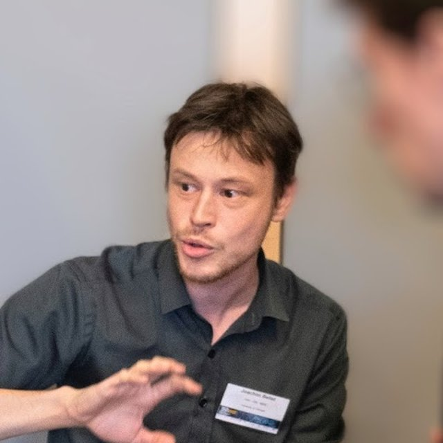

Visual perception in prefrontal cortex
How prefrontal neuronal ensembles represent what we see, from a coarse first sweep to rich representations, within tens of milliseconds.
Postdoctoral researcher · University of Tübingen
I study how the brain turns fleeting sensory inputs into stable perception, memory and conscious experience.
Post‑doctoral researcher in Markus Siegel’s laboratory at the Magnetoencephalography (MEG) Centre, University of Tübingen. Previously I worked with Timo van Kerkoerle, Bechir Jarraya, Theofanis Panagiotaropoulos and Stanislas Dehaene at NeuroSpin (CEA/Paris‑Saclay).

01
My work investigates the neural mechanisms that allow fleeting sensory inputs to be transformed into stable conscious experience. I use large-scale multi‑electrode recordings in non‑human primates to decode how ensembles of neurons in the ventrolateral prefrontal cortex encode visual stimuli, maintain short‑term memory traces, and build predictive internal models of the world. I am broadly interested in how these processes support perception, memory and decision making.
How prefrontal neuronal ensembles represent what we see, from a coarse first sweep to rich representations, within tens of milliseconds.
How the brain learns the structure of visual sequences and detects when expectations are violated.
How short‑term memory traces are kept, and how they distort what we remember.
Deep learning tools that detect rare but relevant events in noisy signals, such as saccades and complex spikes.
02
Nov 2022 – Present
Magnetoencephalography (MEG) Centre, Tübingen, Germany (Lab of Markus Siegel)
Investigating brain structures associated with temporary working memory dysfunction.
Nov 2019 – Nov 2022
CEA, NeuroSpin, Unicog, Gif-sur-Yvette, France (Lab of Stanislas Dehaene, Team of Timo van Kerkoerle)
Investigating the prefrontal cortex's role in vision and oddball detection.
July 2014 – July 2019
Centre for Integrative Neuroscience, Tübingen, Germany (Lab of Ziad Hafed)
Developing deep learning-based solutions for the detection of events in noisy time series signals. Revealing phase locking of brain oscillations to microsaccades generation.
Oct 2013, Jan – June 2014
School of Bioscience, Cardiff, UK (Lab of Vincenzo Crunelli)
Testing the effects of various serotonin agonists on absence seizures in epileptic rats.
April – June 2013
Centre for Integrative Neuroscience, Tübingen, Germany (Lab of Andreas Bartels)
EEG recording and psychophysics in humans.
July 2012
Saint-Anne Hospital, Paris, France (Lab of Oussama Kebir)
Investigating potential genetic markers in schizophrenia.
2015 – 2019
Centre for Integrative Neuroscience, Tübingen, Germany
Dissertation: “Detecting Rare but Relevant Events in Systems Neuroscience” (magna cum laude)
2012 – 2014
Pierre et Marie Curie University (UPMC, Paris 6), France
2009 – 2012
UPMC, France
03
The ventrolateral prefrontal cortex (vlPFC) is well known for its involvement in high-level functions such as cognitive control and language. However, vlPFC’s role in visual processing is less clear. Here, we investigated how neuronal ensembles in the vlPFC dynamically encode different types of visual information. We found that the vlPFC processes visual information in two stages. First, an “early” response from 50 to 90 ms after stimulus onset encodes the low spatial frequency component of an image. Then, from 100 ms on, the representational geometry changes and contains much richer information.
We recorded neuronal populations in ventrolateral prefrontal cortex while macaques passively viewed visual sequences. The same neurons encoded both the specific images being shown and the abstract structure of the sequence; these representations updated rapidly when a mismatch occurred and generalized across different sequences.
We demonstrated that ventrolateral prefrontal cortex population activity reliably encodes the identity of visual stimuli within ~60 ms, even under conditions that reduce post‑perceptual processing. Decoding accuracy drops as new stimuli appear, raising questions about whether this activity reflects conscious access, phenomenal content or preconscious waves.
Contrary to the assumption that short‑term memory faithfully preserves high‑acuity foveal input, we discovered that remembered foveal targets are systematically mislocalized. The largest errors occurred for the most central targets, illustrating that the neural representation of sensory memory can be surprisingly distorted.
We developed a deep learning algorithm to detect complex spikes in cerebellar Purkinje cells, which are critical for motor learning but difficult to identify due to their complex waveforms. Our method matches human expert performance in accuracy and duration estimation while being significantly faster.
We introduced U'n'Eye, a convolutional neural network for saccade detection that achieves human-level accuracy even for challenging eye movements like microsaccades. This open-source tool outperforms existing methods and facilitates robust analysis of eye movement data.
We demonstrated that microsaccades, often thought to be involuntary, can be generated on demand to remembered locations. These memory-guided microsaccades are precise, associated with distinct neural activity in the superior colliculus, and reveal a link between oculomotor control and working memory.
We found that microsaccades trigger long-lasting, rhythmic oscillations in visual detection performance in the alpha and beta frequency bands. These oscillations are sequentially pulsed across visual hemifields, suggesting that microsaccades temporally organize visual processing in a direction-dependent manner.
We investigated the role of serotonin receptors in a rat model of absence epilepsy. We found that activating 5-HT2A and 5-HT2C receptors suppresses absence seizures, suggesting that these receptors exert a negative control over seizure generation and could be targets for new anti-epileptic drugs.
Full record on ORCID.
04
Open-source tools I build in my spare time.
A day planner for ADHD users that shows one task at a time.
A self-hosted research workstation for managing PDFs, exploring literature, and editing LaTeX drafts.
Converts scientific PDFs to audio with one chapter per section. Runs in Colab, Kaggle or on your own computer.
Tools to detect and label saccades, microsaccades, and blinks. Extends the original U'n'Eye (Bellet et al., 2019) with web and Android labelers.
05
Poster Dynamic selectivity of visual features in macaque monkey prefrontal cortex: A comparative analysis with deep neural networks.
Systems Neuroscience Symposium, Tübingen, Germany
Poster Dynamic selectivity of visual features in macaque monkey prefrontal cortex: A comparative analysis with deep neural networks.
Neuro-AI-Talks, Osnabrück, Germany
Talk Decoding rapidly presented visual stimuli from prefrontal ensembles without report nor post-perceptual processing.
CIN-NIPS-Asia Pacific symposium, Tübingen, Germany
Poster Decoding rapidly presented visual stimuli from prefrontal ensembles without report nor post-perceptual processing.
FENS meeting, Paris, France
Poster Decoding rapidly presented visual stimuli from prefrontal ensembles without report nor post-perceptual processing.
Symposium “From Cortical Microcircuits to Consciousness” (CORTICON), Paris, France
Poster Using deep neural networks to detect complex spikes of cerebellar Purkinje Cells.
12th Primate Neurobiology Meeting, Göttingen, Germany
Talk Human-level saccade detection performance using deep neural networks.
M3 satellite conference of the 11th Primate Neurobiology Meeting, Tübingen, Germany
Poster Human-level saccade detection performance using deep neural networks.
ZüMüTü meeting, Zürich, Switzerland
Poster Sequential hemifield gating of 8–15 Hz behavioral performance oscillations after microsaccades generation.
SfN meeting, San Diego, California
Poster Phase-locking of behavioral fluctuations to microsaccade generation.
VSS meeting, St. Pete Beach, Florida
Talk Phase-locking of behavioral fluctuations to microsaccade generation.
NeNa meeting, Schramberg, Germany
06
I am a neuroscientist holding a PhD in Neuroscience with extensive postdoctoral experience in electrophysiology. I have a proven track record in developing and applying advanced machine learning techniques for event detection in noisy time-series signals. My passion lies in bridging preclinical and clinical research to improve mental health and drive translational outcomes.
I received my Ph.D. in systems neuroscience at the Werner Reichardt Centre for Integrative Neuroscience, University of Tübingen, where I worked with Ziad M. Hafed on microsaccades, neural oscillations and machine‑learning methods for detecting rare events. Following my doctorate I joined the Cognitive Neuroimaging Unit at NeuroSpin (CEA/Paris‑Saclay) to collaborate with Timo van Kerkoerle, Bechir Jarraya, Theofanis Panagiotaropoulos, and Stanislas Dehaene on prefrontal neural codes and internal models. Since November 2022 I have been a post‑doctoral researcher in Markus Siegel’s laboratory at the Magnetoencephalography (MEG) Centre of the University of Tübingen. My long‑term research aims to understand how transient sensory inputs and memory traces interact to generate stable conscious experience and behavior.
Languages: Fluent in English, French, and German.
07
I welcome collaboration and scientific discussions.
MEG Centre, University of Tübingen, Germany